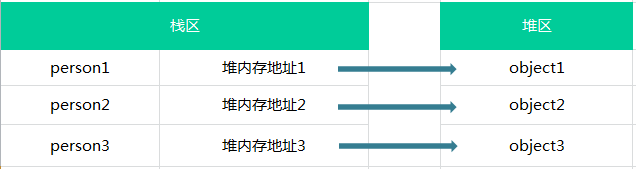
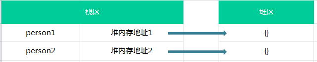
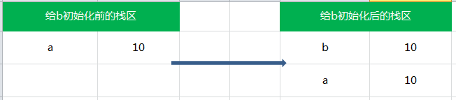
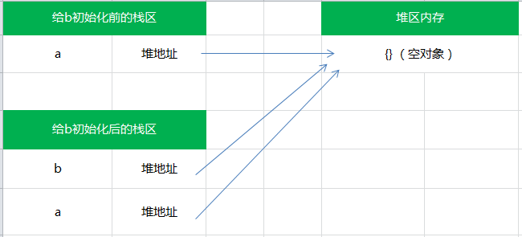

js 中的浅拷贝和深拷贝
前言
最近在读 zepto 的源码，深有感触，感觉随便一段代码都可以延伸出一大堆的知识点，在看到深拷贝和浅拷贝的时候，之前只是了解过什么是深拷贝什么是浅拷贝，并没有对齐实现进行探索，所以本文主要讲一下什么是深拷贝、什么是浅拷贝、深拷贝与浅拷贝的区别，以及怎么进行深拷贝和怎么进行浅拷贝
堆和栈的区别
其实深拷贝和浅拷贝的主要区别就是其在内存中的存储类型不同。
堆和栈都是内存中划分出来用来存储的区域。
栈（stack）为自动分配的内存空间，它由系统自动释放；而堆（heap）则是动态分配的内存，大小不定也不会自动释放。
ECMAScript 的数据类型
在将深拷贝和浅拷贝之前，我们先来重新回顾一下 ECMAScript 中的数据类型。主要分为
基本数据类型
基本数据类型主要是：undefined，boolean，number，string，null。
基本数据类型存放在栈中
存放在栈内存中的简单数据段，数据大小确定，内存空间大小可以分配，是直接按值存放的，所以可以直接访问。
基本数据类型值不可变
javascript中的原始值（undefined、null、布尔值、数字和字符串）与对象（包括数组和函数）有着根本区别。原始值是不可更改的：任何方法都无法更改（或“突变”）一个原始值。对数字和布尔值来说显然如此 —— 改变数字的值本身就说不通，而对字符串来说就不那么明显了，因为字符串看起来像由字符组成的数组，我们期望可以通过指定索引来假改字符串中的字符。实际上，javascript 是禁止这样做的。字符串中所有的方法看上去返回了一个修改后的字符串，实际上返回的是一个新的字符串值。
基本数据类型的值是不可变的，动态修改了基本数据类型的值，它的原始值也是不会改变的，例如：
|
|
这一点其实开始我是比较迷惑的，总是感觉 js 是一个灵活的语言，任何值应该都是可变的，真是图样图森破，我们通常情况下都是对一个变量重新赋值，而不是改变基本数据类型的值。就如上述引用所说的那样，在 js 中没有方法是可以改变布尔值和数字的。倒是有很多操作字符串的方法，但是这些方法都是返回一个新的字符串，并没有改变其原有的数据。
所以，记住这一点：基本数据类型值不可变。
基本类型的比较是值的比较
基本类型的比较是值的比较，只要它们的值相等就认为他们是相等的，例如：
|
|
比较的时候最好使用严格等，因为 == 是会进行类型转换的，比如：
|
|
引用类型
基本数据类型存放在堆中
引用类型（object）是存放在堆内存中的，变量实际上是一个存放在栈内存的指针，这个指针指向堆内存中的地址。每个空间大小不一样，要根据情况开进行特定的分配，例如。
|
|

引用类型值可变
引用类型是可以直接改变其值的，例如：
|
|
引用类型的比较是引用的比较
所以每次我们对 js 中的引用类型进行操作的时候，都是操作其对象的引用（保存在栈内存中的指针），所以比较两个引用类型，是看其的引用是否指向同一个对象。例如：
|
|
虽然变量 a 和变量 b 都是表示一个内容为 1，2，3 的数组，但是其在内存中的位置不一样，也就是说变量 a 和变量 b 指向的不是同一个对象，所以他们是不相等的。

传值与传址
了解了基本数据类型与引用类型的区别之后，我们就应该能明白传值与传址的区别了。
在我们进行img-jsstack-4.png类型的赋值（=）是在内存中新开辟一段栈内存，然后再把再将值赋值到新的栈中。例如：
|
|

所以说，基本类型的赋值的两个变量是两个独立相互不影响的变量。
但是引用类型的赋值是传址。只是改变指针的指向，例如，也就是说引用类型的赋值是对象保存在栈中的地址的赋值，这样的话两个变量就指向同一个对象，因此两者之间操作互相有影响。例如：
|
|

浅拷贝
在深入了解之前，我认为上面的赋值就是浅拷贝，哇哈哈，真的是图样图森破。上面那个应该只能算是“引用”，并不算是真正的浅拷贝。
一下部分参照知乎中的提问： javascript中的深拷贝和浅拷贝
赋值（=）和浅拷贝的区别
那么赋值和浅拷贝有什么区别呢，我们看下面这个例子：
|
|
先定义个一个原始的对象 obj1，然后使用赋值得到第二个对象 obj2，然后通过浅拷贝，将 obj1 里面的属性都赋值到 obj3 中。也就是说：
- obj1：原始数据
- obj2：赋值操作得到
- obj3：浅拷贝得到
然后我们改变 obj2 的 name 属性和 obj3 的 name 属性，可以看到，改变赋值得到的对象 obj2 同时也会改变原始值 obj1，而改变浅拷贝得到的的 obj3 则不会改变原始对象 obj1。这就可以说明赋值得到的对象 obj2 只是将指针改变，其引用的仍然是同一个对象，而浅拷贝得到的的 obj3 则是重新创建了新对象。
然而，我们接下来来看一下改变引用类型会是什么情况呢，我又改变了赋值得到的对象 obj2 和浅拷贝得到的 obj3 中的 language 属性的第二个值和第三个值（language 是一个数组，也就是引用类型）。结果见输出，可以看出来，无论是修改赋值得到的对象 obj2 和浅拷贝得到的 obj3 都会改变原始数据。
这是因为浅拷贝只复制一层对象的属性，并不包括对象里面的为引用类型的数据。所以就会出现改变浅拷贝得到的 obj3 中的引用类型时，会使原始数据得到改变。
深拷贝：将 B 对象拷贝到 A 对象中，包括 B 里面的子对象
浅拷贝：将 B 对象拷贝到 A 对象中，但不包括 B 里面的子对象
| – | 和原数据是否指向同一对象 | 第一层数据为基本数据类型 | 原数据中包含子对象 |
|---|---|---|---|
| 赋值 | 是 | 改变会使原数据一同改变 | 改变会使原数据一同改变 |
| 浅拷贝 | 否 | 改变不会使原数据一同改变 | 改变会使原数据一同改变 |
| 深拷贝 | 否 | 改变不会使原数据一同改变 | 改变不会使原数据一同改变 |
深拷贝
看了这么半天，你也应该清楚什么是深拷贝了吧，如果还不清楚，我就剖腹自尽(?_?)
深拷贝是对对象以及对象的所有子对象进行拷贝。
那么问题来了，怎么进行深拷贝呢？
思路就是递归调用刚刚的浅拷贝，把所有属于对象的属性类型都遍历赋给另一个对象即可。我们直接来看一下 Zepto 中深拷贝的代码：
|
|
在 Zepto 中的 $.extend 方法判断的第一个参数传入的是一个布尔值，判断是否进行深拷贝。
在 $.extend 方法内部，只有一个形参 target，这个设计你真的很巧妙。
因为形参只有一个，所以 target 就是传入的第一个参数的值，并在函数内部设置一个变量 args 来接收去除第一个参数的其余参数，如果该值是一个布尔类型的值的话，说明要启用深拷贝，就将 deep 设置为 true，并将 target 赋值为 args 的第一个值（也就是真正的 target）。如果该值不是一个布尔类型的话，那么传入的第一个值仍为 target 不需要进行处理，只需要遍历使用 extend 方法就可以。
这里有点绕，但是真的设计的很精妙，建议自己打断点试一下，会有意外收获（玩转 js 的大神请忽略）。
而在 extend 的内部，是拷贝的过程。